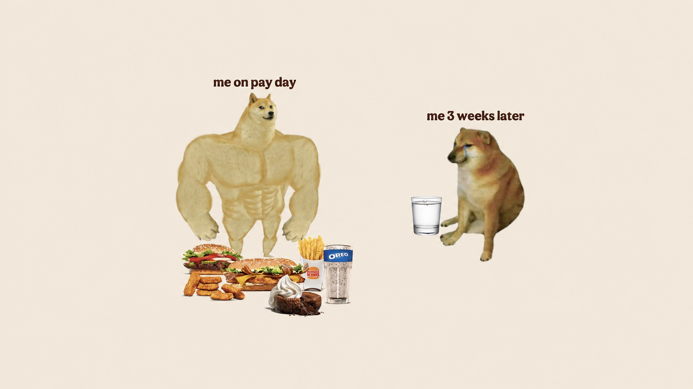
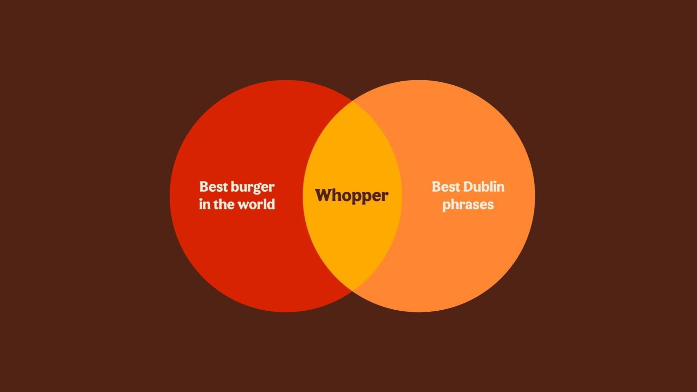
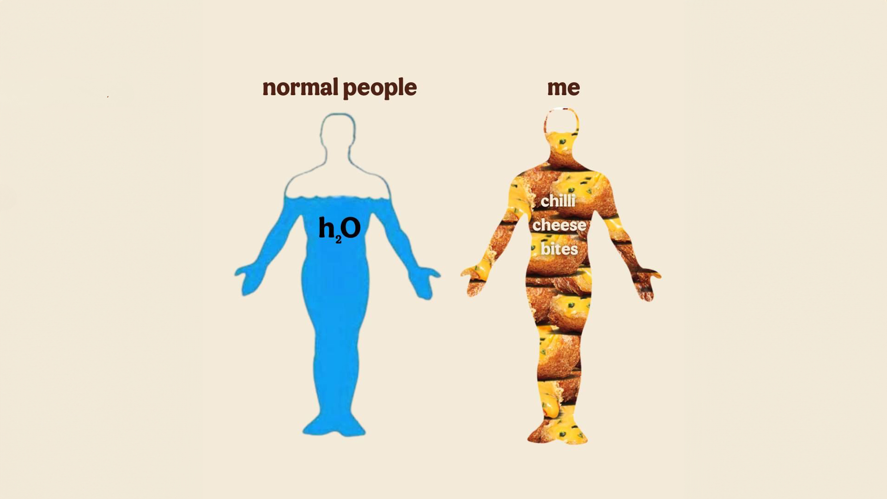

Burger King — Whopper Content for Gen-Z
All selected work Burger KingWhopper® Content for Gen-Z
Burger KingWhopper® Content for Gen-ZFunny gets the scroll to stop. The app downloads got them to actually order something.
Fast food socials in the early 2020s had a very specific energy, brands like Wendy's and KFC weren't selling burgers so much as they were being funny at people, in public, in real time. Burger King Ireland's socials needed the same magic: not a billboard shouting a message, but something that felt like it was actually part of the conversation happening in people's group chats and For You pages.
I worked on Burger King's content and social strategy for several years, and the job was never about restraint. We made a case for Chilli Cheese Bites being more essential than water. We ran facts about what your first bite of a burger apparently says about you. We built content around a turf-grilled Whopper for Paddy's Day. None of it was trying to sound like advertising, it was trying to sound like the funniest account in your feed that also happened to sell burgers. That's a harder needle to thread than it looks: the joke has to land on its own before anyone even registers it's a brand talking.
Why did it work so well? It worked because we never treated the audience like they needed convincing. Gen Z can smell a brand trying too hard from a comment section several scrolls away, so the strategy was never “make them like us,” it was “be the account they'd screenshot and send to a friend... burger optional.”
- Role
- Content, Community & Social Management
- Brand
- Burger King (Ireland)
- Category
- QSR / Food & Beverage
- Location
- Ireland
- Year
- 2020–2024
Alongside the content itself, we drove tens of thousands of downloads to the BK App, proof that the joke account still had to do a real job underneath all the fun.
No other account gave me more room to be genuinely funny and tapped into the madness of the Gen-Z social landscape and culture for a living. That's not something you get to say about most FMCG work.


